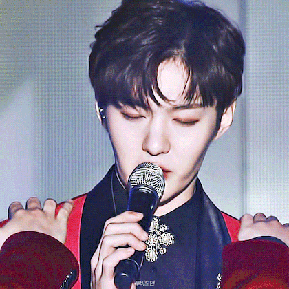

.jpeg) 서은광
서은광
출생 1990년 11월 22일 (33세) 경기도 용인군 용인읍 유방리 (現 경기도 용인시 처인구 유방동)
국적 대한민국
본관 이천 서씨 (利川 徐氏)
신체 171cm, 60kg, A형, 260m
가족 아버지, 어머니 황순옥 남동생 서은총(1993년생)
반려동물 티모(개)
학력 서룡초등학교 (졸업) 태성중학교 (졸업) 태성고등학교 (졸업) 동신대학교 (실용음악학 / 학위 취소)
종교 개신교 (예장합동)
병역 대한민국 육군 제27보병사단 병장 만기전역 (2018년 8월 21일 ~ 2020년 4월 7일)
소속사 데이원뮤직
소속 그룹 비투비, 비투비-블루, 비투비 포유
포지션 리더, 메인보컬
데뷔 2012년 3월 21일 비투비 싱글 1집 비밀 (Insane) (데뷔일로부터 +4333일, 11주년) 2020년 6월 8일 미니 1집 FoRest : Entrance (데뷔일로부터 +1332일, 3주년)
MBTI ESFJ
팀 내에서 유일하게 탕수육 부먹이다.
음식 중에서 제일 좋아하는 음식은 누룽지 백숙이며 콩국수, 소고기, 탱크보이 애플 젤리맛, 팥빙수 아이스크림도 좋아한다. 또한 어머니께서 자신을 '김치맨'이라 부른다고 했을 정도로 김치를 굉장히 좋아하는데 된장찌개와 김치찌개 중에서 김치찌개를 골랐으며, 본인의 라면 레시피에는 김치와 김치국물을 넣는다고 한다.
싫어하는 음식으로는 민트초코가 있는데 비트콤을 보면 아예 처음부터 민트초코 아몬드를 질색팔색을 하는 모습을 볼 수 있다. 당근을 매우 싫어하고 머스타드도 못 먹는데 하다방 PC방 콘텐츠 음식 메뉴로 민트초코 떡볶이와 머스타드를 뿌린 핫도그를 보자 "아 이건 좀..."과 같은 반응을 보였다. 또한 카페인 자체를 몸이 잘 안 받아 커피도 잘 못 마신다고 한다.
패션과 헤어스타일에 있어 독특한 미적감각과 취향을 가지고 있다. 밸런스 게임에서 두 번째 솔로 의상을 고를 때 임진각 공연 당시 입었던 무대 의상을 그 때는 정말 멋있다고 생각했고 지금도 좋아한다고 했으며 비트콤에서 4U : OUTSIDE 자켓 이미지를 촬영할 때 멤버인 이민혁이 올빽 머리를 예전부터 해보고 싶어하지 않았냐고 물었다. 그래도 이와 별개로 패션은 무난한 편인데 특히 나이키를 굉장히 좋아해 인스타그램에 올린 사진 중 모자부터 신발까지 죄다 나이키인 셀카도 있다.
좋아한다고 언급한 아이돌은 Red Velvet, TWICE, IZ*ONE이며 이 중 IZ*ONE은 비디오스타와 박원의 키스 더 라디오에서 좋아하는 걸그룹이라고 밝혔다. 또한 방탄소년단의 지민을 귀엽다고 언급했으며 인스타그램에 방탄소년단의 노래 DNA를 스트리밍하는 모습을 올린 적이 있다. 덤으로 박지훈도 잘생겼다고 했다.
벌레를 워낙 싫어해서 보기만 해도 기겁을 한다. 인터뷰에서도 귀신과 벌레 중 굳이 좋은 걸 선택하라는 질문을 받았을 때도 귀신을 선택했으며 리얼리티나 비하인드에서도 벌레를 보고 심하게 놀라는 리액션을 자주 보여준다. 제대를 하고도 변하지 않았는지 비투비 포유 활동 당시 비트콤 116화에서도 멤버 이창섭이 메뚜기가 있다고 장난을 치자 기겁을 하며 메뚜기를 찾았다.
팀 내 메인보컬이지만 랩을 엄청나게 좋아하고 열심히 해서 어떤 비하인드 영상에서든 한번쯤은 서은광의 랩을 들을 수 있다. 특히 진격의 거인 둘, BewhY와 고등래퍼2의 랩을 방송에서 자주 하는데 이홍기의 키스 더 라디오와 2017년 BTOB TIME 콘서트에서 BewhY의 FOREVER를 불렀는데 중간에 한 번 실수를 했지만 엄청 열심히 연습했는지 꽤 하는 실력을 선보였으며, 막나가는 인터뷰에서는 이민혁이 멤버들이 도전하면 좋을 장르를 추천할 때 반 농담으로 서은광의 랩에서 거장의 소울이 느껴진다며 힙합을 추천했다. 그리고 제대 후에도 열정은 여전해 비록 SHOW ME THE MONEY 시리즈는 나가지 못하더라도 대신 네이버 나우 힙합 프로그램인 비트주세요에 출연해 본인이 투자한 주식들이 떡락한 것을 소재로 소지말박이라는 곡을 만들었으며, 비긴어게인 오픈마이크에선 그리워하다를 부를 때 랩을 했다.
좋아하는 색은 파란색이다
.jpeg) 이민혁
이민혁
출생 1990년 11월 29일 (33세)
서울특별시 노원구 월계동
국적 대한민국
본관 경주 이씨 (慶州 李氏)
신체 171cm, 71kg, A형, 260mm
가족 부모님, 형 이정민(1986년생)
학력 서울중계초등학교 (졸업) 신수중학교 (졸업) 광성고등학교 (졸업) 단국대학교 (공연영화학 / 중퇴) 열린사이버대학교 (통합예술치료학 / 학사) 인하대학교 일반대학원 (문화경영학 / 석사 재학)
종교 무종교
병역 경찰청 의무경찰 수경 만기전역 (2019년 2월 7일 ~ 2020년 9월 12일)
소속사 무소속
소속 그룹 비투비, 비투비 포유
포지션 메인래퍼
데뷔 2012년 3월 21일 비투비 싱글 1집 비밀 (Insane) (데뷔일로부터 +4334일, 11주년) 2019년 1월 15일 정규 1집 HUTAZONE (데뷔일로부터 +1843일, 5주년)
MBTI ISTJ
고등학교 1학년 때는 반 1,2등까지 할 정도로 공부를 열심히 했었지만 사춘기의 영향과 부모님과의 갈등으로 인해 반항심도 강했고 음악을 시작했었기 때문에 이후 성적이 계속 떨어졌었다고 한다. 이것을 본 그의 아버지가 처음에는 체대 입시를 권유했지만 나중에는 본인이 원했던 연기학원을 등록하는 것으로 방향을 바꿔 단국대학교와 명지대학교 뮤지컬학과에 정시로 동시에 합격하였다. 다만 이 과정까지는 순탄치 않았는지 고3 수험생 상담 컨텐츠를 할 때 수시와 정시를 포함해 대학교 9개를 연속으로 불합격 통지를 받았다고 한다.
데뷔 전부터 사용하던 예명의 공식적인 발음은 허타지만 영문명으로 HUTA여서 후타라고 발음하는 경우도 있다. 이에 대해 이민혁은 인터뷰에서 어떻게 부르든 괜찮다고 대답했다.
데뷔곡인 비밀을 본인의 흑역사라고 생각하고 있어 노래는 몇년 간 듣지 않았으며 영상도 5년 가까이 찾아보지 않았다고 한다. 아이돌등판에서는 지금보다 실력이 많이 부족했기 때문에 무대에서 못한 부분이 너무 보여서 그렇다고 이야기했다.
비투비로 데뷔하기 전 JYP엔터테인먼트 공개 오디션 5기 출신으로 파이널까지 진출했었고 JYP엔터테인먼트 출신인 프니엘을 통해서 알게 된 사람들도 있다보니 주로 JYP엔터테인먼트 출신이나 연관된 인물들과 친분이 있는 경우가 많다. 또한 킹덤: 레전더리 워에 출연한 후에는 함께 유닛을 했던 인물들과도 많이 친해졌다.
두시탈출 컬투쇼에서 임현식과 더불어 비투비에서 남팬 보유 비중이 가장 많은 멤버로 뽑혔다. 사랑해요 민혁이형!
관절을 꺾는 버릇이 있다. 솔로 활동 당시 주간 아이돌 검색창희에선 본인은 보기 흉한 버릇이라고 생각한다고 작성했다.
팀에서 유일하게 귀를 뚫은 적이 없었고 2016년 11월 7일 미니 앨범 9집 NEW MEN으로 컴백하면서 귓바퀴 부근에 하나 피어싱을 한 듯 했으나 귀찌로 밝혀졌다. 그런데 2018년 12월 7일 베트남 공연 차 출국하는 공항에서 피어싱을 3개나 하고 나타났으며 이후에는 꾸준히 귀걸이를 하고 있다.
인생에 있어 저점이라고 할 만큼 군 생활이 많이 힘들었고 고생한 기억밖에 없다고 한다. 의무경찰 복무 당시 의경제도 폐지가 논의되던 시기여서 부사수가 전역 직전에 들어올 만큼 막내 생활도 오래한데다가 본인의 주장에 따르면 부대 내에서 괴롭힘도 당해 정신적으로 고통을 많이 받았다고 한다. 그래도 군 생활을 하면서 배운 것도 있고 멘탈이 많이 단단해졌다고 덧붙였다.
이창섭출생 1991년 2월 26일[입학유예] (32세)
경기도 수원시 장안구 정자동
국적 대한민국
본관 전의 이씨 (全義 李氏)
신체 172.9cm 70kg O형 260mm 왼손잡이
가족 부모님, 여동생 이정은(1992년생)
반려견 구리(♀,비글)
학력 화홍초등학교 (졸업) 수성중학교 (졸업) 삼일상업고등학교 (졸업) 호원대학교 예술대학 (실용음악학부 보컬전공 11 / 학사)
종교 개신교
병역 대한민국 육군 국방부 근무지원단 병장 만기전역 (2019년 01월 14일 ~ 2020년 8월 21일)
소속사 판타지오
소속 그룹 비투비, 비투비-블루, 비투비 포유
포지션 리드보컬
직업 가수, 뮤지컬 배우, 사업가
데뷔 2012년 3월 21일 비투비 싱글 1집 비밀(Insane) (데뷔일로부터 +4333일, 11주년) 2018년 12월 11일 솔로 미니 1집 MARK (데뷔일로부터 +1877일, 5주년)
MBTI INFJ
왼손잡이이다. 그룹에서 유일한 왼손잡이라서 동작이 혼자 반대가 되는 경우가 종종 있다. 그룹 단체 인사인 Born to Beat!을 외치며 핑거스냅을 할 때에도 높은 확률로 혼자 왼손으로 튕긴다. 글씨가 손에 밀려 뭉개지는 것을 방지하기 위해 고무장갑을 끼고 여자친구(아이돌)에게 편지를 쓴 적이 있다고 한다. 발 역시 왼발잡이라서 신바람의 솔로 발안무를 할 적에 댄서들과 반대가 되곤 한다.
손바닥에 부분적 다한증이 있다고 한다. 심한 것은 아니고 날 때와 안 날 때가 있지만, 팬들과 손을 잡고 소통해야하는 팬싸인회 특성상 손바닥의 땀 때문에 팬들이 거부감을 느낄까 봐 늘 물티슈나 휴지를 챙기고 다녔다는 듯. 그 외에도 다한증 문서에 들어가 보면 알겠지만 일상생활에서 불편한 점이 한두가지가 아니라, 심한 사람들은 트라우마가 생기기도 한다는데 본인은 그 정도까지는 아니라고 말하기도 했다.
추위를 남들보다 많이 타고, 더위는 덜 탄다. 그래서 겨울에는 롱패딩을 입고도 추워하고, 여름이 다 가기 전부터 긴팔+긴바지를 착용하는 모습을 자주 볼 수 있다. 최근에는 한국의 여름이 너무 더워졌다며 더위를 잘 안 타는데도 에어컨 없이 못 살겠다고 말하기도 했다.
초등학교 때 좋아하는 여자아이에게 주려고 종이학을 접다가 병이 너무 커 분에 못 이겨 다 찢어버렸다고 한다.
학창 시절 수학에서 집합이 나오자 그때부터 공부 대신 다른 길을 찾기 시작했으며 고등학교 때는 모든 과목이 9등급 이상으로 나와 본 적이 없다고 한다. 하지만 자신이 원하는 것을 이루기 위해서 공부를 하기도 하는데 예를 들면 인터스텔라를 보려고 무려 상대성 이론에다 양자역학을 배워 사전녹화 중 응원하러 온 팬들에게 본인만의 방식으로 설명해주기도 했다
1살 차이 여동생이 있는데 과거에 서은광을 좋아한다고 하자 이 때 한 말이 "용돈 끊기고 싶냐"였다.
막내인 육성재와도 케미가 좋은데 애늙은이 막내와 해맑은 형아로 정신연령이 비슷해서 팬들이 애칭삼아 부르는 '초딩라인'이 유명하다. 4살의 꽤 많이 나는 나이 차이에도 불구하고 막장 하극상을 보여주는 동생에게 가장 장난을 잘 받아주고 원하는 반응을 해주는 형 역할을 하고 있다. 보통 이창섭은 형이니까 봐준다고 해도 콧방귀도 안뀌는 육성재의 모습이 주요 포인트지만 가끔 보여지는 이창섭의 형님다운 모습에 팬들은 열광하곤 한다. 이렇게 둘의 보여지는 이미지는 별명에 맞게 다소 유치하고 가볍게 여겨질 수 있으나 여러 인터뷰를 통해 밝혀진 바에 따르면 서로에게 깊은 고민 상담을 자주 한다는 의외로 진중한 관계를 가지고 있다. 군복무도 약 한달반 정도 말년병장과 신입 이등병의 선후임관계로(2020년 6월부터 7월 29일까지) 하였었다. 이창섭이 미복귀 전역하기 하루 전날 육성재가 너무 부럽다고 말했다고 한다.
예전에 "검은머리가 흰 머리가 될때까지 여러분들을 위해 노래하겠습니다."라고 했을때 그때 당시 흰색 머리로 염색을 한 상태여서 갑작스런 거짓말 은퇴소식을 전했다. 물론 은퇴는 아니다. 라고 했다.
.gif) 임현식
임현식
출생 1992년 3월 7일 (31세)
서울특별시 도봉구
국적 대한민국
본관 풍천 임씨 (豊川 任氏) 29세손
신체 177cm, 73kg, A형
가족 아버지 임지훈, 어머니 박선미 형 임윤식(1990년생)
학력 냉천초등학교 (졸업) 저동중학교 (전학) → 상해향명중학교 (졸업) 백석고등학교 (졸업) 호원대학교 (실용음악학부 보컬전공 11 / 학사) 중부대학교 대학원 실용음악과
종교 가톨릭 (세례명: 아르도)
병역 대한민국 육군 수도군단 병장 만기전역 (2020년 5월 11일 ~ 2021년 11월 14일)
소속사 무소속
소속 그룹 비투비, 비투비-블루
포지션 리드보컬
데뷔 2012년 3월 21일 비투비 싱글 1집 비밀 (Insane) (데뷔일로부터 +4334일, 11주년) 2019년 10월 14일 미니 1집 RENDEZ-VOUS (데뷔일로부터 +1571일, 4주년)
MBTI INTP
좌우명 생각이 현실이 된다.
비투비의 서은광, 이민혁과 더불어 학창 시절에 우등생이었다고 한다. 당시에 반에서 1,2등도 해봤을 정도로 공부를 잘해서 주변에서 과학고등학교와 외국어고등학교를 권유했는데 만약 음악을 하지 않았더라면 치과의사를 했을 거라고 한다.
초등학교 4학년 때 같은 학년 아이들이 만든 팬카페가 있었을 정도로 인기가 많았다고 한다. 당시 팬카페 회원 수는 20명 정도로, 게시판에 들어가면 여자아이들이 임현식을 두고 싸우고 있었다고 그중 운영자였던 여자아이가 현식에게 그 카페에 가입해달라고 해서 카페에 가입한 뒤 게시물들을 직접 보기도 했다고 한다.
EXO의 디오와 백석고등학교 동창이다. 임현식이 중국의 상하이로 유학을 갔다 전학을 왔을 때 친해졌는데 헤븐리보이스라는 보컬 동아리에서 함께 활동했었다고 한다. 이 때 유명한 일화로는 임현식이 반에서 가장 노래 잘하는 애가 누구냐고 친구들에게 물어보자 다들 디오라고 했고 후에 임현식은 디오에게 전학온 당일 찾아가 "니가 여기 노래 짱이라며? 같이 축제 나가자!"라고 말한 뒤 학교 축제에서 둘이 같이 노래를 불렀다고 한다. 당시 디오는 이 상황에 매우 당황했다고 언급했다
그리워하다의 응원법을 직접 피드백했는데 음을 정확히 살리라고 한다든가, 피치 떨어지지 말라고 하는 등 스파르타식 보컬 디렉팅 스타일로 했다.
비투비 내에서 제일 많이 먹는 대식가로 식사 여부에 따라 텐션이 확연히 차이난다. 그러다보니 컴백 시기에 맞춰 다이어트도 자주 하는 편인데 4일 만에 4kg을 감량했을 당시 비트콤에선 마른게 눈에 보일 정도였다.
아버지가 한국 포크송의 원류 임지훈이며 몇몇 방송이나 라디오에서 아버지와 동반 출연하여 부자의 케미를 보여주었다.
인터뷰에서 대통령이 없는 국가에서 활동하는 경험도 했다고 언급해 화제가 되었다.
52016년 설날에는 아버지 임지훈이 진행하는 '밤을 잊은 그대에게' 더블 DJ를 했는데 이 때문에 게시판이 중장년층 위주에서 키스 더 라디오처럼 10~20대 젊은 팬들 위주의 게시판으로 바뀐 듯한 현상이 일어났다.